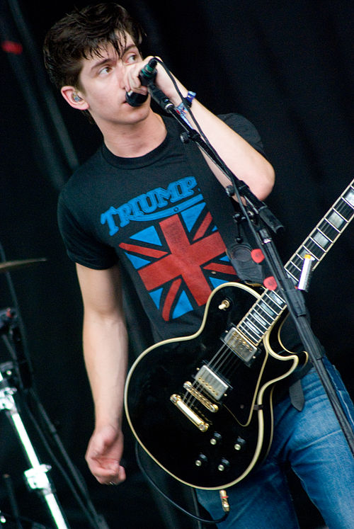
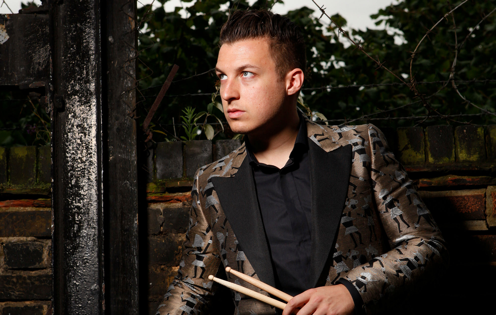
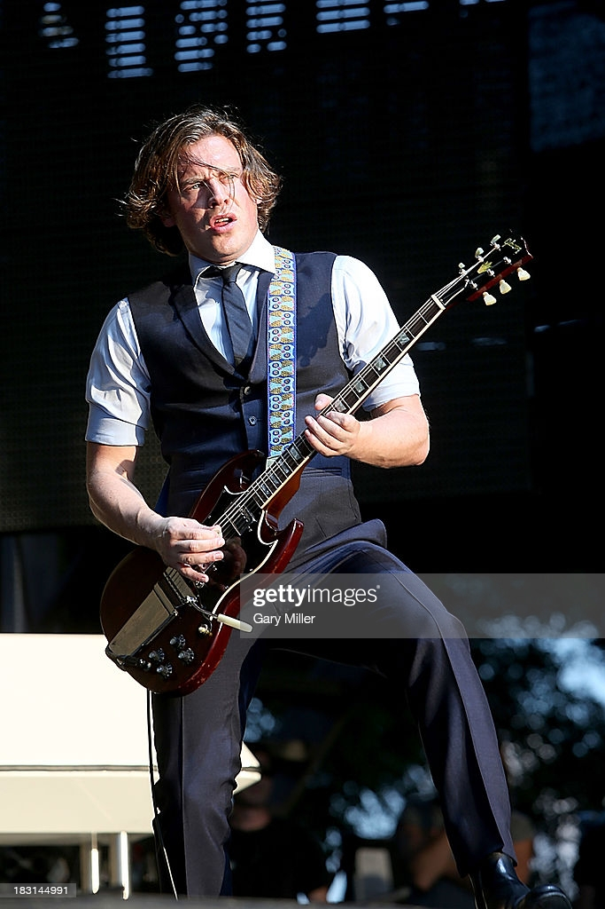
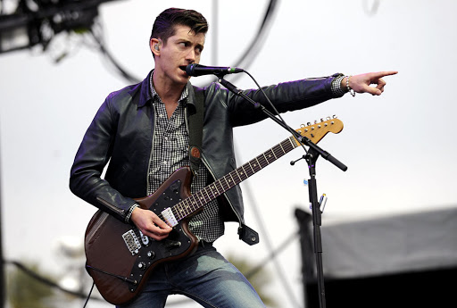

Alexander David Turner
(born 6 January 1986) is an English musician, singer, songwriter, and record producer. He is best known as the frontman and principal songwriter of the rock band Arctic Monkeys

Matthew Helders
(born 7 May 1986) is an English drummer, vocalist and songwriter. He is best known as a founding member of the indie rock band Arctic Monkeys

Jamie Cook
attended Ecclesfield Secondary School in Chapeltown, Sheffield. Originally a next door neighbour of fellow band member Alex Turner, Cook and the other band members picked up their respective instruments and formed the Arctic Monkeys in 2002.

Andy Nicholson
is an English musician, DJ, record producer, and photographer, best known as the original bass guitarist of the Sheffield band Arctic Monkeys, which he left in 2006. In 2008, he founded Mongrel with Jon McClure of Reverend and The Makers.[1] In 2009, he became the bassist for ex-Milburn frontman Joe Carnall's band The Book Club